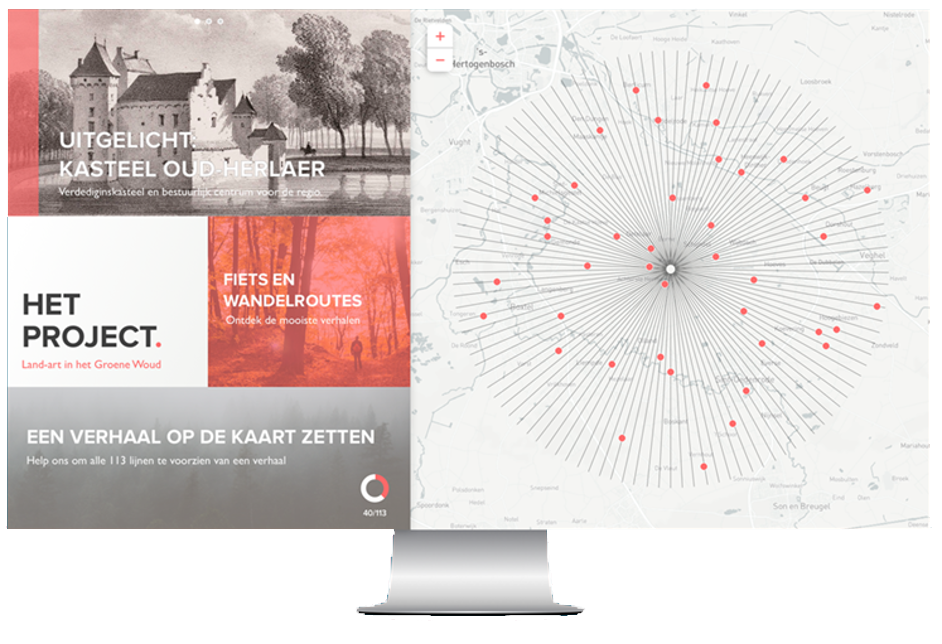
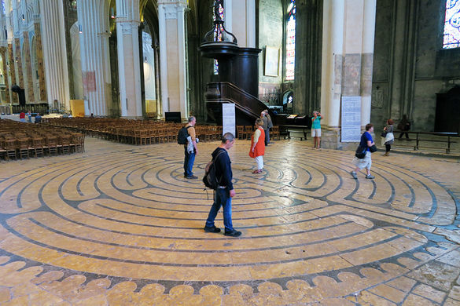
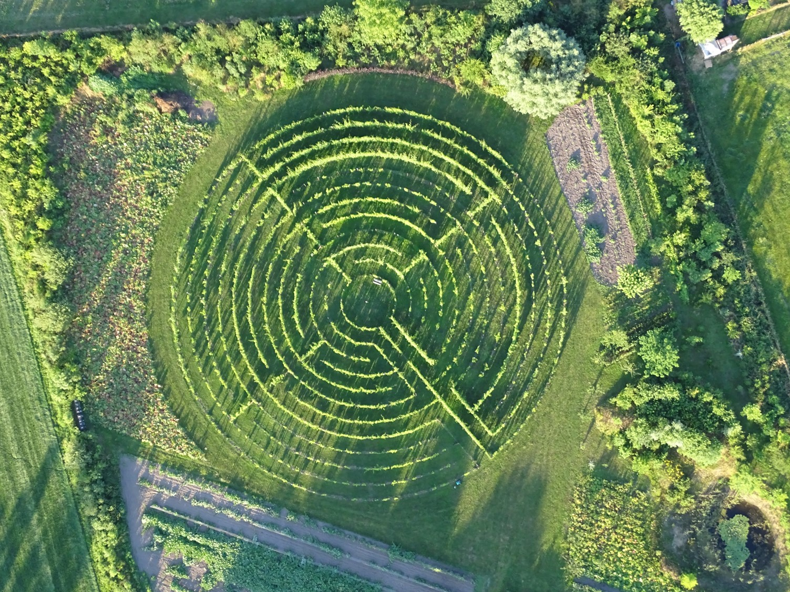

Zonder verhalen zijn woorden als water.....
Het VerhAal brengt natuur en cultuur samen in het Aa-dal tussen Veghel en Heeswijk-Dinther. Een traject van zes kilometer langs rivier de Aa, waar de bezoeker lopend of fietsend wordt verrast met beeldende kunst, verhalen, poëzie, dans, fotografie en muziek. Alle optredens en locaties zijn gratis toegankelijk!
Net als Het VerhAal laat Winery & Herbs naast zien, ruiken en proeven, ook ervaren centraal staan. Winery & Herbs verweeft gastvrijheid met kunst en cultuur. Op het bedrijf is met 1000 wijnstokken een labyrint, in de vorm van die in Chartes, gerealiseerd.
Vanuit dit labyrint lopen 114 denkbeeldige lijnen van 20km het landschap in. De lijnen komen in het gebied vele verhalen tegen. Oude en nieuwe verhalen over het landschap, de bevolking, over personen en families.
Op het terrein van Winery & Herbs is een paar jaar terug een druivenlabyrint gerealiseerd. Het idee is om de 113 tanden rondom het labyrint als denkbeeldige geometrische lijnen de regio in te trekken. De lijnen kruisen een locatie met een verhaal. De verhalen van toen, nu en morgen.
Met dit concept kan de toerist verleid worden om naar Meierijstad en omstreken te komen om de verhalen van toen en de schoonheid van nu te ervaren. Hierdoor wordt de regio een trekpleister en creëert men stimulans voor de verdere ontwikkeling van de toeristische aantrekkingskracht en behoud van erfgoed.
Daarnaast wordt de regio hierdoor onderscheidend en sterker verbonden met haar bewoners, ondernemers, instanties en overheden.
Het Land-Art project is al enige tijd in ontwikkeling, wat eind dit jaar/begin volgend jaar zijn eerste vruchten gaat afwerpen. Er staat namelijk wat groots op de planning. Men is bezig een digitaal platform te ontwikkelen voor het verzamelen, 'verhalenjagen', van verhalen.
Deze verhalen kunnen aangeleverd worden via een website en een applicatie, die vorm samen het digitale platform van dit land-art project. De uitvoerende fase zal dit najaar starten.
Lees je dit en denk je al een interessant verhaal te weten? Wacht dan niet en stuur een mail naar info@wineryandherbs.nl. Vergeet niet je verhaal een titel te geven, een locatie door te geven en je verhaal te neer te schrijven natuurlijk.
Centraal in Het Groene Woud, op de locatie van Winery & Herbs, is in 2012 naar het voorbeeld van het 12e-eeuwse labyrint in de kathedraal van Chartres (Frankrijk), een druivenlabyrint aangeplant met verschillende soorten druivenstokken. Deze locatie is niet toevallig, want Winery & Herbs heeft, als een van de acht bezoekerscentra van nationaal landschap Het Groene Woud, een sterke ambitie om het toeristisch-recreatieve aanbod maximaal voor het voetlicht te brengen. Bovendien wil de initiatiefnemer de krachten bundelen met uiteenlopende andere toeristisch-recreatieve en cultuurhistorische initiatieven in de omgeving. Dit alles met de bedoeling om de potenties van Het Groene Woud maximaal te benutten en meer bezoekers te trekken.
Het Labyrint van Chartres heeft o.a. een religieuze betekenis. Vanuit de christelijke opvatting staat het kruis voor het offer dat nodig is om een nieuwe richting in te slaan. Ook wordt het labyrint als zoektocht in het onderbewustzijn weergegeven. Het letterlijk doorlopen van het labyrint verklaart vaak de voldoening die gevonden wordt zodra men het middelpunt bereikt en men kan terugkijken op de wirwar van paden die is afgelegd. Het kenmerk van het labyrint is dat een ieder altijd het centrum bereikt, ondanks de bochten en tegengestelde richtingen, zonder te verdwalen. Het middelpunt wordt als het middelpunt van je eigen wezen beschouwd en vervolgens kunnen weer nieuwe richtingen worden ingeslagen.
Het Druivenlabyrint staat daarmee voor bezinning, bezieling, inkeer en rust waarbij je jezelf centraal stelt tijdens de activiteit. In het labyrint ben je vooral met jezelf en je eigen ontwikkeling bezig. Met deze gedachten is het idee ontstaan om, nadat je het Druivenlabyrint hebt aangedaan, weer in contact te komen met de omgeving; in contact te komen met Het Groene Woud!
Tussen de Bibliotheek in Veghel en de Kilsdonkse Molen in Heeswijk-Dinther is een route van zes kilometer vol kunstzinnige en literaire verrassingen voor jong en oud. Volg Het VerhAal op Facebook voor het laatste nieuws.
Zaterdagavond is een feestje op een bijzonder locatie langs de Aa. De nieuwe gemeentedichters van Meierijstad en Bernheze worden die avond bekendgemaakt en daarna bouwt de band KnockOut een feestje.
Optredens zijn er op zondag van o.a. Özcan Akyol, Jules Deelder, Alex Roeka en Björn van der Doelen. Verder zijn er een tangosalon, een zingende professor, foto-exposities en kunst te bewonderen. Speciale aandacht is er voor het thema laaggeletterdheid met o.a. Sofie van den Krommenacker en taalambassadeur Rob Weyers.
Wat kun je verwachten?
- een mooie, groene route langs het water
- schrijvers en dichters die verhalen vertellen op mooie plekken in de natuur
- taal en literatuur
- artiesten die je trakteren op kleine
optredens
- kunst en muziek
- hapjes en drankjes langs de route
- en nog veel meer!
Wat kost het?
Helemaal niets! Het VerhAal is een gratis toegankelijk festival. Kom langs en laat je verrassen!
Programma en informatie
Kijk op www.hetverhaal.nu voor het programma en andere informatie of check Het VerhAal op Facebook.
De organisatie is een samenwerking van de Bernhezer Kunstkring, Kunstgroep de Compagnie, de Kilsdonkse Molen en de Bibliotheken Meierijstad en Bernheze.
1. Bibliotheektuin
2. Lambertuskerk
3. Spoorfietswandelvaarrijdkruising
4. Woorden en Daden
5. Vloek en Zucht
6. Infoteek Waterschap Aa Maas
7. Molen Aa
8. Tango podium
9. Kildonkse Molen: Poeziepodium
10. Groentepluktuin Meulenhof
11. Bloemenpluktuin Op 't Erf